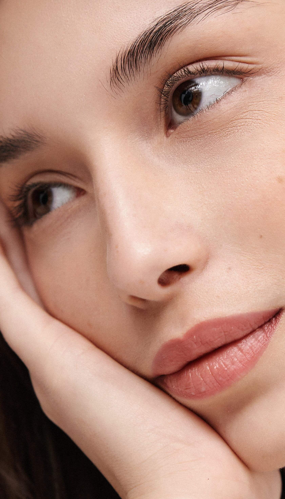

ПРОЦЕСС ЗАЖИВЛЕНИЯ
ПЕРВЫЕ СУТКИ: максимальная яркость цвета, неравномерный отек как нормальная реакция организма, цвет меняется. Форма меняется;
ПЕРВЫЕ ТРИ ДНЯ: формирование корочек;
НЕДЕЛЯ: корочки сошли естественным путем (зависит от ораганизма);
ДВЕ НЕДЕЛИ: цвет меняет оттенок, может быть четче контур, так как идет проявление оттенка;
МЕСЯЦ: проявился оттенок и форма, принимаем решение о коррекции, присылаем фото в директ.
ВАЖНО:
Для профилактики и предупреждения инцицирования, ускорения аживления и для обеспечения качества результата процедуры, рекомендуется:
- не париться в бане, не загорать, не купаться в водоеме и бассейнах;
- ограничить применение декоративной косметики, помады;
- пользоваться рекомендованным протовоспалительным препаратом;
- не наносить уходовые средства на место ПМ, в точ числе и разнозаживляющие;
- не ускорять отслоение корочек физическиим воздействием или косметическими препаратами;
Коррекция не раньше чем через месяц после первой процедуры. Вы всегда можете обратится за консультацией